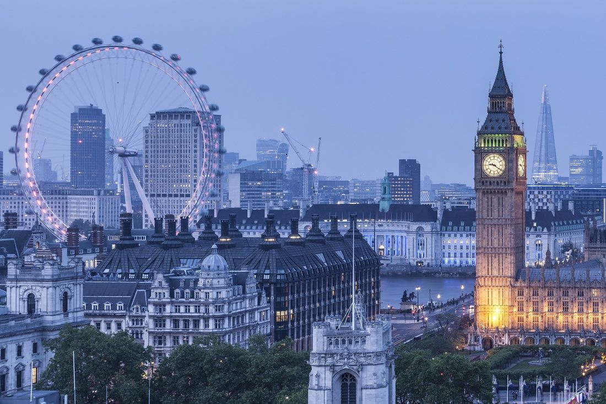

 Лондон - это один из городов, что я всегда мечтал посетить.
К сожалению, за 19 лет своей жизни мне так и не удалось побывать в этом замечательном городе. Однако после завершения обучения в ИТМО поездка в Лондон будет одним из первых дел, что я совершу)
Причины, по которым я не поеду в Лондон в ближайшие несколько лет